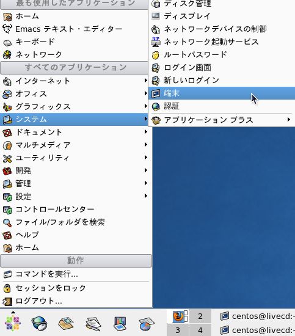

「端末」の使い方
Table of Contents
1 このページの更新履歴
2 「端末」の基本的なコマンド
2.1 コマンドのルール
- 引数は半角スペースで区切る.
[]内の引数は省略可能.- オプションは
-aのように-をつけて指定する．複数のオプションを指定する場合,-l -aとする代わりに-laとまとめられる． - 特別なディレクトリとして,
~/(ホームディレクトリ),./(現在のディレクトリ),../(1つ上位のディレクトリ/親ディレクトリ)がよく使われる．
2.2 マニュアル表示，ファイルの中身を閲覧
-
man コマンド名 - コマンドのマニュアルを表示する
man ls # ls コマンドのマニュアルを表示する
マニュアル表示モードに対しては，以下のようなキー操作が可能である．
キー 処理 qマニュアルモードを終了 RET,jまたは下カーソル1行進む kまたは上カーソル1行戻る SPCまたはf1ページ進む b1ページ戻る -
less ファイル名 - ファイルの中身を閲覧する
less ~/.bash_profile # .bash_profile の中身を閲覧する
中身の閲覧モードに対しては，マニュアル表示モードと同様のキー操作が可能．
2.3 ファイル/ディレクトリ操作
-
pwd - 現在のディレクトリを確認する．
pwd -
mkdir ディレクトリ名 - 指定した名前のディレクトリを新しく作成する
mkdir ~/rep1 # ホームディレクトリの下に rep1 というディレクトリを作成する mkdir test1 # 現在のディレクトリの下に test1 というディレクトリを作成する
-
rmdir ディレクトリ名 - 指定した名前のディレクトリを削除する
- 削除するディレクトリは 中が空でないといけない (中身があるディレクトリを削除しようとするとエラーが表示される)
- 中身が空でないディレクトリを中身ごと消去するには
rm -rを使用
-
ls [オプション] [ディレクトリ名] - 指定したディレクトリ内のファイル/ディレクトリの一覧を表示させる．
- ディレクトリ名を省略した場合は，現在のディレクトリが指定される (
ls .) と同等．
よく使うオプション：
a.で始まる隠しファイル/ディレクトリも表示l権限やファイルサイズなどの詳細情報も表示する． 使用例：
ls # 現在のディレクトリ内の一覧を表示 ls ~/Desktop/ # デスクトップ内の一覧を表示 ls -a # 隠しファイル/ディレクトリを含む全ての一覧 ls -l # 詳細情報を表示
- ディレクトリ名を省略した場合は，現在のディレクトリが指定される (
-
cd [移動先ディレクトリ名] - 指定したディレクトリに移動する．
- ディレクトリ名を省略した場合は，ホームディレクトリが指定される (
cd ~と同等)． - ディレクトリ名に
-を指定した場合，直前のディレクトリに移動する
使用例：
cd # ホームディレクトリに移動 cd ~/Desktop/ # デスクトップに移動 cd - # 直前のディレクトリに戻る
- ディレクトリ名を省略した場合は，ホームディレクトリが指定される (
-
mv [オプション] 移動元 移動先 - ファイル/ディレクトリを移動(名称変更)する
- 移動元と移動先が 同じディレクトリ の場合は，単なる 名称変更 となる
- 移動先に 既存のディレクトリ名 を指定した場合, そのディレクトリの下に 移動元ファイルを移動させる
よく使うオプション：
n移動先に既存のファイル名を指定したとき，上書きしない i移動先のファイル名が既に存在するとき，確認メッセージを表示させる f移動先のファイル名が既に存在するとき，強制的に上書きする !!!危険!!! 使用例：
mv report1 report1.tex # report1 を report1.tex という名前に変更 mv -n report1 report1.tex # report1.tex が存在している場合には名称変更しない mv report1.tex rep1/ # rep1 というディレクトリがある場合，report1.tex をその下に移動 mv report1.* rep1/ # rep1 というディレクトリがある場合，report1 で始まる全てのファイルをその下に移動
-
cp [オプション] コピー元 コピー先 - ファイル/ディレクトリをコピーする
- デフォルトでは 単一のファイルのみ をコピーする
- コピー先に 既存のディレクトリ名 を指定した場合, そのディレクトリの下に コピー元ファイルの複製を作る
- ディレクトリごとコピーしたい場合 には
rオプションを使う
よく使うオプション：
r指定したディレクトリ以下のサブディレクトリも含めてコピーする iコピー先のファイル名が既に存在するとき，確認メッセージを表示させる fコピー先のファイル名が既に存在するとき，強制的に上書きする !!!危険!!! -
rm [オプション] 削除するファイル - ファイル/ディレクトリを削除する
- 削除されたファイルは 復元できない
- ディレクトリごと削除したい場合 には
rオプションを使う
よく使うオプション：
r指定したディレクトリ以下のサブディレクトリも含めて削除する !!!危険!!! i確認メッセージを表示させる f強制的に削除する !!!危険!!!
2.4 検索
-
find [オプション] ディレクトリ名 判別式 アクション - 指定されたディレクトリ内のファイルを検索
- 判別式の文字列にはワイルドキャラクター(
*: 任意の0字以上の文字に一致;?: 任意の1文字に一致)が利用可能 - 判別式の条件に時間やサイズを指定する場合,
+nは「〜以上のファイル」,-nは「〜以下のファイル」,nは「〜に一致するファイル」を検索 - アクションは省略されると
-printが指定される． - よく使う判別式には，以下のものがある．
! 条件条件でないものが検索 条件1 -and 条件2条件1かつ条件2のファイルを検索 条件1 -or 条件2条件1または条件2のファイルを検索 -name 文字列ファイル名もしくはディレクトリ名を検索 -iname 文字列-nameと同様だが，大文字/小文字を区別しない-path 文字列ファイル/ディレクトリ名でなく，パスを検索 -type 種別ファイル種別で検索. f: ファイル;d: ディレクトリ-atime +nアクセス時間が n日以上のファイルを検索. -amin +nのクセス時間が n分以上のファイルを検索 -mtime +n修正時間(内容の修正)が n日以上のファイルを検索 -mmin +n修正時間がn分以上のファイルを検索 -ctime +n変更時間(ファイル名または内容修正)がn日以上のファイルを検索 -cmin +n変更時間がn分以上のファイルを検索 -size +nファイルサイズ(バイト単位)がn以上のファイルを検索 - よく使われるアクションには，以下のものがある．
-print検索したファイルを相対パスで表示 -ls検索したファイルの詳細情報を表示 -exec コマンド名 {} \;検索したファイルに対してコマンドを実行． {}の部分が検索結果に置換される．-ok-execと同様だが，実行前に確認メッセージを表示．
find . -type f -name "report*" # 現在のディレクトリで report で始まるファイルを検索 find . -type f -name "*.tex" # 現在のディレクトリで .tex で終わるファイルを検索 find . -type f -name "report*" -and "*.tex" # report で始まり .tex で終わるファイルを検索 find . -name "*.tex" -exec grep "document" {} \; # .tex で終わるファイルに対して # document を含む行を表示させる find . -type f -name ".aux" -exec rm {} \; # .aux で終わるTeXの一時ファイルを削除する
- 判別式の文字列にはワイルドキャラクター(
3 「端末」の使い方
「端末(terminal)」とは，(狭い意味では)計算機をコマンド入力で操作するためのソフトウェアである．
ファイル/ディレクトリの一覧表示，コピー，消去，移動(名称変更)，中身の確認といった基本操作から，
各種コマンド(LaTeX の作成の際に使った platex (TeX→DVI) や dvipdfmx (DVI→PDF)など)，
さらにはシステム管理などまでできる(というか，端末から入力されたコマンドで
全ての操作が行なえるように OS 自体が設計されている)．
実は，LaTeX でPDF作成する際に使った
M-!(shell-command) というキーバインドは， Emacs (のミニバッファ)に，この「端末」の機能を肩代わりさせるものだった．
本講義では，C言語のコンパイルを Emacs 上で，実行を「端末」上で行なうことにする． C言語プログラムは Emacs 上で実行することもできるが， 特に，処理中でユーザーと「やり取り」をするには「端末」の方が都合がよい．
3.1 端末の起動
左下のOSメニュー→システム→端末を選んで起動．デスクトップのアイコンをダブルクリックしてもよい．

3.2 コマンドの引数とTAB 補完
「端末」で入力するコマンドの中には 引数 を受け取るものがある． コマンドと引数および引数と引数の間には 半角スペースを入力する 決まりになっている．
コマンドの引数にはコマンドの処理対象となる 通常の引数 と， コマンドの振る舞いを制御する オプション とに分かれる．
オプションは，通常, - (ハイフン)の後にアルファベットを並べることで指定できる．
「端末」では，コマンドやファイル・パスに TAB 補完 が利用できる．
コマンドやファイル・パスの一部を入力して TAB キーを押した場合，
それで始まるコマンドやファイル・パスが1つしかなければそれを自動的に入力してくれ，
候補が複数存在する場合はその一覧を表示してくれる．
大変便利かつ必須の機能 なので，ぜひマスターして欲しい． 覚えておかなければ，この後のコマンド操作が著しく面倒くさくなるだろう．
3.3 マニュアル
「端末」で入力できるコマンド(UNIXコマンド)は何十種類もあり，
その全てをこのページで網羅することは不可能である．
コマンドの詳細な説明が見たい時には man コマンドを使う．例えば，
man ls
とすれば, ls の詳細な説明が読める.
3.4 ディレクトリとパス
Windows のエクスプローラ)や Mac の Finder.app を使っていれば， ディレクトリ(フォルダ)の概念は自然に理解できているだろう． レポートのTeXソースやC言語のソースファイルなどのファイルは， 目的別にディレクトリに整理しておくべきである．
ディレクトリは入れ子構造にできる. 2014ICL-B/ というディレクトリの下に
tex_report/ と C_report/ というサブディレクトリがあり，
さらに tex_report/ の下に rep1/ というサブディレクトリがあり，
tex_report/rep1/ の下に report1.tex と report1.pdf ファイル，
C_report/ の下に sample1.c と sample1.o というファイルがある場合，それらの構造は
下記のような木(tree)で表現される．
`--2014ICL-B
|-- tex_report
| `-- rep1
| |-- report1.tex
| `-- report1.pdf
`-- C_report
|-- sample1.c
`-- sample1.o
このとき, 2014ICL-B ディレクトリは，そのサブディレクトリである
tex_report1 や C_report ディレクトリの 親ディレクトリ と呼ばれる．
同様に, rep1 は report1.tex や report1.pdf の親ディレクトリである．
木構造のおかげで，任意のファイルに唯一つのパスを設定できる．例えば，上述の構造の下で
sample1.o のファイルシステム上の位置は
2014ICL-B/C_report/sample1.o
と表現でき，他に sample1.o というファイルがあったとしても，完全に区別できるのだ．
3.5 特別なディレクトリ
UNIX システムには2つの特別なディレクトリが存在する．1つは
ユーザーの個々人のファイルやディレクトリなどが収められている「ホームディレクトリ」，
もう1つはシステム全体の最上位の「ルートディレクトリ」である．
ホームディレクトリは最も頻繁に使われるもので, ~/ という名前がついている
(~ はチルダと呼ばれる記号で，106キーボードではシフトと数値の「0」を同時押しすれば入力できる)．
3.6 相対パスと絶対パス
パスの指定方法には，現在のディレクトリからの 相対パス と，上述の特別なディレクトリを用いた 絶対パス の2通りがある．
- 相対パス
- 現在のディレクトリを基準とするパス
-
./ - 現在のディレクトリ(明示的に指定する必要は無い)
-
../ - 1つ上位の親ディレクトリ(複数回指定可能. 例えば
../../とすれば2つ上位のディレクトリ) -
ディレクトリ名/ - 指定したディレクトリ
-
- 絶対パス
- ホームディレクトリ(
~/) もしくは ルートディレクトリ(/) で始まるパス-
~/ - ホームディレクトリ(左下のOSメニュー→「ホーム」で表示されるディレクトリ)
-
/ - ルートディレクトリ(情報基礎では滅多に使うことはない)
-
3.7 ファイルエクスプローラ や Finder.app のような機能
これらのソフトウェアと同様，端末は，デフォルトでは「現在のディレクトリ (current directory)」に対する処理を行なう．
現在のディレクトリを確認するには pwd というコマンドを使う．
エクスプローラや Finder.app では，常に現在のディレクトリ内のファイル/ディレクトリの一覧が表示される．
端末では ls というコマンドでファイル/ディレクトリの一覧を表示させられる．
ls の引数にディレクトリ名を入力する(ls の後に半角スペースを1つ空けてからディレクトリ名を入力する)と，
当該ディレクトリの一覧を表示させられる．
このディレクトリは(現在のディレクトリからの) 相対パス もしくは
(ホームまたはルートディレクトリを使った) 絶対パス で指定できる．
コマンドにはオプション引数を指定できる．オプションは - (ハイフン)の後にアルファベットをつけて指定する．
例えば, ls コマンドでよく用いられるオプションは a と l である．前者を指定する(ls -a)と,
隠しファイル(.emacs.el のようにファイル名が . で始まる)も表示できる．後者を指定する(ls -l)と，
ファイルのアクセス権やファイル・サイズなどの詳細情報も表示できる．
一度に複数のオプションを与える場合, - の後にまとめて指定することもできる．順序は自由．
例えば, ls ~/Desktop に a と l のオプションを両方与えたい場合, 以下のいずれでも同じ結果が得られる．
ls -l -a ~/Desktop/ # オプションを個別に指定(lが先) ls -a -l ~/Desktop/ # オプションを個別に指定(aが先) ls -la ~/Desktop/ # オプションをまとめて指定(lが先) ls -al ~/Desktop/ # オプションをまとめて指定(aが先)
なお, ls の出力結果が多すぎて画面がスクロールしてしまうのが問題になる場合は，
ls | less
として less コマンドに出力結果を パイプ してやるとよい．
エクスプローラや Finder.app では，表示されているディレクトリをダブルクリックすると，当該ディレクトリの中に移動する．
上位の親ディレクトリに移動するには，アドレスバーで当該ディレクトリ名をクリックしたり，
メニューから移動→内包しているフォルダ(⌘+↑)を選択したりする．
現在のディレクトリに移動する直前のディレクトリに戻るには「戻る」ボタンを使う．
「端末」では，こうしたディレクトリ間の移動に cd というコマンドを使う．
cd .. (1つ上のディレクトリに移動), cd ~ (ホームディレクトリに移動),
cd - (直前のディレクトリに移動) などがよく使われる．
ディレクトリの作成/削除は, それぞれ, mkdir および rmdir で行う．
それぞれ，引数として与えられたディレクトリを作成したり，削除したりする．
mkdir dir1 # dir1 というディレクトリを作成 rmdir dir1 # dir1 というディレクトリの中身が空なら削除
ただし，中身が残っているディレクトリを rmdir で削除しようとすると
「ディレクトリは空ではありません」というエラーメッセージが表示される．
ディレクトリを中身ごと削除するには rm コマンドに -r オプションを与えて実行する．
ファイルやディレクトリの移動/名称変更(mv)やコピー(cp)も端末から実行できる.
それぞれ, 第1引数に移動/コピー元 のファイル名, 第2引数に移動/コピー先 のファイル名を指定する．
その際，第2引数に既存のフォルダ名を指定した場合は，当該ディレクトリの下にファイルを移動したり，複製を作成したりする．
mv file1 file2 # file1 の名前を file2 に変更 mv file1 dir1/ # file1 をディレクトリ dir1 の下に移動 cp file1 file2 # file1 の複製を file2 という名前で作成 cp file1 dir1/ # file1 の複製をディレクトリ dir1 の下に作成
気をつけたいのは，移動先/コピー先のファイルが既に存在する場合は 勝手に上書きしてしまう 点だ．
その際， 上書きされたファイルは消滅して復元不可能 となる．
このため, 慣れない間はファイル・エクスプローラ的なソフトウェアを使った方がよい かもしれない．
オプションで n (上書き禁止)や i (上書きする場合には確認メッセージを表示)を必ず与えるようにしたい．
なお, cp コマンドでディレクトリの中身(サブディレクトリの中身も含めて)ごとコピーする場合にはオプションで r を与える必要がある．
ファイルやディレクトリは削除は, rm コマンドで行なえるが，ある程度慣れるまでは ファイル・エクスプローラ的なソフトウェアを使った方がよい.
というのも, rm で 削除されたファイルは消滅して復元不可能となる ためだ．
処理対象の指定に余程自信が無い限り，オプションで i (削除するかどうかの確認メッセージを表示)を必ず与えるようにしたい．
なお, rm コマンドでオプションに r を与えると，ディレクトリの中身(サブディレクトリの中身も含めて)ごと削除する．
つまり, うっかり rm -r ~/ を実行した場合, ホームディレクトリが，それ以下のファイルやディレクトリごと消去 される．
しかも，それを復元することはできない．ものすごい危険だ．